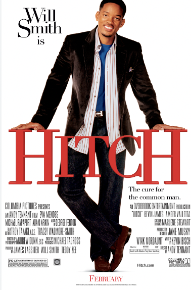

2005
Hitch
"Dating coach Alex "Hitch" Hitchens (Will Smith) mentors a bumbling client, Albert, who hopes to win the heart of the glamorous Allegra Cole. While Albert makes progress, Hitchens faces his own romantic setbacks when proven techniques fail to work on Sara Melas, a tabloid reporter digging for dirt on Allegra Cole's love life. When Sara discovers Hitchens' connection to Albert -- now Allegra's boyfriend -- it threatens to destroy both relationships."-Film Synopsis from Goggle
